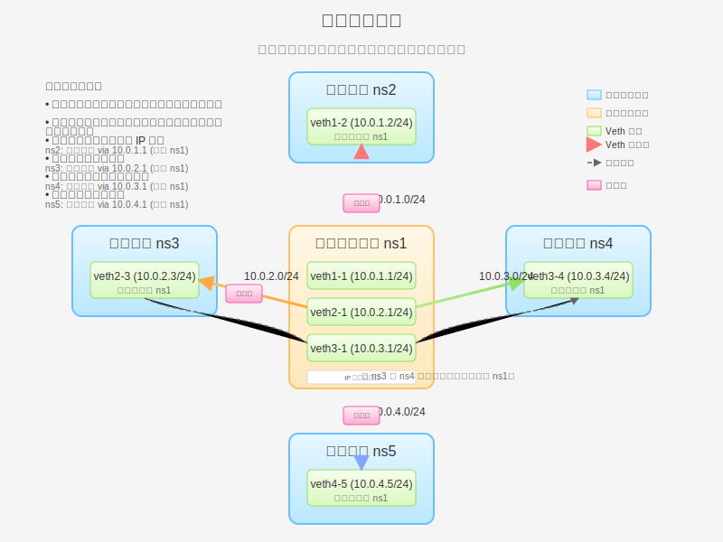

Veth 对星型网络拓扑
星型网络拓扑是一种常见的网络结构，其中一个中心节点连接到多个边缘节点。在 Linux 网络命名空间和 Veth 对的环境中，我们可以使用这种拓扑来模拟集中式管理的网络环境。本页将详细介绍星型拓扑的原理、实现方法和实际应用场景。

星型拓扑原理
星型拓扑是一种网络结构，其中所有节点都连接到一个中心节点。在 Linux 网络命名空间的环境中，这意味着一个中心命名空间通过 Veth 对连接到多个边缘命名空间。
星型拓扑的特点
- 集中管理：所有通信都经过中心节点，便于集中管理和监控
- 简单的连接结构：每个边缘节点只需要连接到中心节点
- 易于扩展：添加新节点只需要连接到中心节点
- 路由简单：边缘节点之间的通信路径明确
- 单点故障风险：中心节点故障会影响整个网络
- 中心节点可能成为性能瓶颈：所有流量都经过中心节点
与其他拓扑的比较
与三角形拓扑相比，星型拓扑的连接数量更少，但边缘节点之间的通信需要经过中心节点。与网桥拓扑相比，星型拓扑提供了更好的隔离性，但配置更复杂。
| 特性 | 星型拓扑 | 三角形拓扑 | 网桥拓扑 |
|---|---|---|---|
| 连接数量 | n (n 为节点数) | n(n-1)/2 | n |
| 配置复杂度 | 中等 | 高 | 低 |
| 扩展性 | 好 | 差 | 好 |
| 隔离性 | 好 | 好 | 一般 |
| 单点故障风险 | 高 | 低 | 高 |
星型拓扑在容器网络中的应用
星型拓扑在容器网络中有多种应用场景：
微服务架构
在微服务架构中，API 网关模式就是一种星型拓扑的应用。API 网关作为中心节点，连接到各个微服务。这种模式提供了集中的认证、授权、路由和监控功能。
边缘计算
在边缘计算场景中，中心云服务可以作为星型拓扑的中心节点，连接到多个边缘计算节点。这种结构便于中心云服务管理和协调边缘节点。
集中式日志收集
在分布式系统中，集中式日志收集系统通常采用星型拓扑，日志收集服务作为中心节点，连接到各个产生日志的服务。
Kubernetes 网络
在某些 Kubernetes 网络实现中，节点上的容器网络接口 (CNI) 插件可能采用星型拓扑，将节点作为中心，连接到该节点上的所有 Pod。
基本实验：创建星型拓扑
在这个实验中，我们将创建一个中心命名空间和三个边缘命名空间，形成星型拓扑。中心命名空间将负责转发边缘命名空间之间的通信。
实验目标
创建如下拓扑：
- 四个网络命名空间：中心 ns1 和边缘 ns2、ns3、ns4
- ns1 和 ns2 通过 veth1-1/veth1-2 连接
- ns1 和 ns3 通过 veth2-1/veth2-3 连接
- ns1 和 ns4 通过 veth3-1/veth3-4 连接
- 边缘命名空间之间的通信需要通过中心命名空间转发
实验步骤
# 步骤 1：创建四个网络命名空间
sudo ip netns add ns1 # 中心命名空间
sudo ip netns add ns2 # 边缘命名空间
sudo ip netns add ns3 # 边缘命名空间
sudo ip netns add ns4 # 边缘命名空间
# 验证创建结果
ip netns list
# 步骤 2：创建三对 Veth 设备
# ns1 和 ns2 之间的 Veth 对
sudo ip link add veth1-1 type veth peer name veth1-2
# ns1 和 ns3 之间的 Veth 对
sudo ip link add veth2-1 type veth peer name veth2-3
# ns1 和 ns4 之间的 Veth 对
sudo ip link add veth3-1 type veth peer name veth3-4
# 验证创建结果
ip link show type veth
# 步骤 3：将 Veth 设备分配到相应的网络命名空间
# ns1 的设备（中心命名空间）
sudo ip link set veth1-1 netns ns1
sudo ip link set veth2-1 netns ns1
sudo ip link set veth3-1 netns ns1
# ns2 的设备
sudo ip link set veth1-2 netns ns2
# ns3 的设备
sudo ip link set veth2-3 netns ns3
# ns4 的设备
sudo ip link set veth3-4 netns ns4
# 验证分配结果
sudo ip netns exec ns1 ip link show
sudo ip netns exec ns2 ip link show
sudo ip netns exec ns3 ip link show
sudo ip netns exec ns4 ip link show
# 步骤 4：配置 IP 地址
# ns1 的设备（中心命名空间）
sudo ip netns exec ns1 ip addr add 10.0.1.1/24 dev veth1-1
sudo ip netns exec ns1 ip addr add 10.0.2.1/24 dev veth2-1
sudo ip netns exec ns1 ip addr add 10.0.3.1/24 dev veth3-1
sudo ip netns exec ns1 ip link set veth1-1 up
sudo ip netns exec ns1 ip link set veth2-1 up
sudo ip netns exec ns1 ip link set veth3-1 up
sudo ip netns exec ns1 ip link set lo up
# ns2 的设备
sudo ip netns exec ns2 ip addr add 10.0.1.2/24 dev veth1-2
sudo ip netns exec ns2 ip link set veth1-2 up
sudo ip netns exec ns2 ip link set lo up
# ns3 的设备
sudo ip netns exec ns3 ip addr add 10.0.2.3/24 dev veth2-3
sudo ip netns exec ns3 ip link set veth2-3 up
sudo ip netns exec ns3 ip link set lo up
# ns4 的设备
sudo ip netns exec ns4 ip addr add 10.0.3.4/24 dev veth3-4
sudo ip netns exec ns4 ip link set veth3-4 up
sudo ip netns exec ns4 ip link set lo up
# 验证配置
sudo ip netns exec ns1 ip addr
sudo ip netns exec ns2 ip addr
sudo ip netns exec ns3 ip addr
sudo ip netns exec ns4 ip addr
# 步骤 5：在中心命名空间启用 IP 转发
sudo ip netns exec ns1 sysctl -w net.ipv4.ip_forward=1
# 验证 IP 转发是否启用
sudo ip netns exec ns1 sysctl net.ipv4.ip_forward
# 步骤 6：配置路由
# ns2 的路由（通过中心命名空间到达其他边缘命名空间）
sudo ip netns exec ns2 ip route add 10.0.2.0/24 via 10.0.1.1
sudo ip netns exec ns2 ip route add 10.0.3.0/24 via 10.0.1.1
# ns3 的路由
sudo ip netns exec ns3 ip route add 10.0.1.0/24 via 10.0.2.1
sudo ip netns exec ns3 ip route add 10.0.3.0/24 via 10.0.2.1
# ns4 的路由
sudo ip netns exec ns4 ip route add 10.0.1.0/24 via 10.0.3.1
sudo ip netns exec ns4 ip route add 10.0.2.0/24 via 10.0.3.1
# 验证路由配置
sudo ip netns exec ns2 ip route
sudo ip netns exec ns3 ip route
sudo ip netns exec ns4 ip route
# 步骤 7：测试连通性
# 从 ns2 测试
sudo ip netns exec ns2 ping -c 3 10.0.1.1 # 直接连接到中心 ns1
sudo ip netns exec ns2 ping -c 3 10.0.2.3 # 通过中心 ns1 连接到 ns3
sudo ip netns exec ns2 ping -c 3 10.0.3.4 # 通过中心 ns1 连接到 ns4
# 从 ns3 测试
sudo ip netns exec ns3 ping -c 3 10.0.2.1 # 直接连接到中心 ns1
sudo ip netns exec ns3 ping -c 3 10.0.1.2 # 通过中心 ns1 连接到 ns2
sudo ip netns exec ns3 ping -c 3 10.0.3.4 # 通过中心 ns1 连接到 ns4
# 从 ns4 测试
sudo ip netns exec ns4 ping -c 3 10.0.3.1 # 直接连接到中心 ns1
sudo ip netns exec ns4 ping -c 3 10.0.1.2 # 通过中心 ns1 连接到 ns2
sudo ip netns exec ns4 ping -c 3 10.0.2.3 # 通过中心 ns1 连接到 ns3
# 步骤 8：清理实验环境
sudo ip netns delete ns1
sudo ip netns delete ns2
sudo ip netns delete ns3
sudo ip netns delete ns4
# 验证清理结果
ip netns list
通过这个实验，我们成功创建了一个星型拓扑，中心命名空间 ns1 负责转发边缘命名空间之间的通信。这种拓扑适用于集中管理的网络，但中心节点可能成为性能瓶颈。
高级实验：带负载均衡的星型拓扑
在这个高级实验中，我们将扩展基本的星型拓扑，添加负载均衡功能。我们将在下一页 星型拓扑高级实验 中详细介绍这个实验。